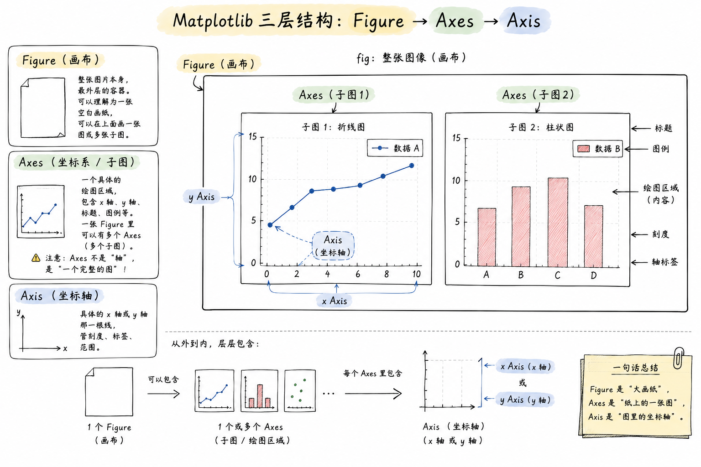
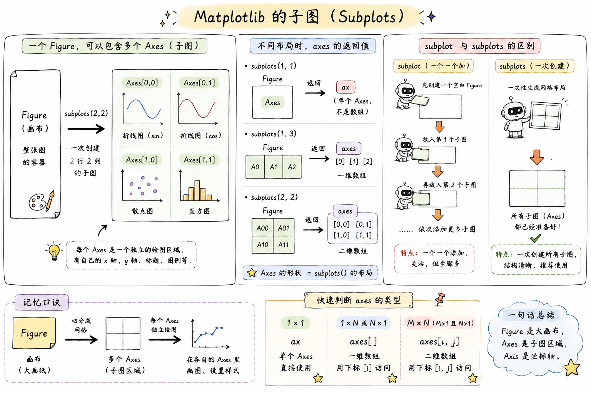

Matplotlib - 数据可视化基础
官方文档：Matplotlib Docs | Pyplot Tutorial
一、简介
Matplotlib 是 Python 最基础、最经典的 2D 绘图库，几乎所有数据可视化库（Seaborn、Pandas 的 .plot()）底层都在调用它。它的目标是让绘图这件事既能"一行代码画个图"应付快速探索，也能"逐个像素调整"做出发表级图表。
一句话：NumPy 是算数据的，Pandas 是理数据的，Matplotlib 是把数据画出来的。
1.1 安装与导入
约定俗成把 matplotlib.pyplot 起别名 plt，几乎所有教程和代码都这么写。
1.2 中文与负号显示
Matplotlib 默认字体不支持中文，中文会显示成方框；同时启用中文字体后，坐标轴的负号也会显示异常。开头统一加两行即可：
plt.rcParams['font.sans-serif'] = ['SimHei'] # 用黑体显示中文
plt.rcParams['axes.unicode_minus'] = False # 正常显示负号
字体按系统换
Windows 用 SimHei（黑体）或 Microsoft YaHei（微软雅黑）；macOS 用 Arial Unicode MS 或 PingFang SC；Linux 需要自己安装中文字体（如 WenQuanYi Zen Hei）。
二、核心概念 ⭐⭐⭐
要把 Matplotlib 用明白，最关键的不是记 API，而是先建立三层结构的心智模型：Figure → Axes → Axis。三个词长得像但完全不是一回事，很多新手在这里被绕晕。
2.1 三层结构
一张图从外到内分三层：
- Figure（画布）：整张图片本身，是最外层的容器。可以理解为一张空白画纸，你在上面能画一张图、也能画多张子图。
- Axes（坐标系 / 子图）：一个具体的绘图区域，包含 x 轴、y 轴、标题、图例等。一张 Figure 里可以有多个 Axes（即多个子图）。注意：Axes 不是"轴"，是"一个完整的图"——这是最容易搞混的点。
- Axis（坐标轴）：具体的 x 轴或 y 轴那一根线，管刻度、标签、范围。

说白了：你在 Figure 这张大画纸上，划分出一个或多个 Axes（每个 Axes 是一张独立的图），每个 Axes 里有 Axis（坐标轴）和你画的曲线/柱子/点。
2.2 两种编程接口 ⭐⭐⭐
Matplotlib 有两套写法，很多教程混着用，导致新手一会儿 plt.xxx 一会儿 ax.xxx，越看越乱。
直接用 plt. 打头，"当前操作总是作用在当前那张图上"。写起来短，适合快速探索。
建议：单图快速看结果用 pyplot，正式代码、多子图统一用面向对象接口。本笔记后面优先用面向对象写法。
| 目的 | pyplot 写法 | 面向对象写法 |
|---|---|---|
| 创建画布 | plt.figure() |
fig, ax = plt.subplots() |
| 设置标题 | plt.title('x') |
ax.set_title('x') |
| 设置 x 轴标签 | plt.xlabel('x') |
ax.set_xlabel('x') |
| 设置轴范围 | plt.xlim(0, 10) |
ax.set_xlim(0, 10) |
| 显示图例 | plt.legend() |
ax.legend() |
规律：plt.xxx() 对应 ax.set_xxx() 或 ax.xxx()。
三、基础绘图 ⭐⭐⭐
3.1 折线图 plot
最常用，画连续变化趋势。
x = np.linspace(0, 2 * np.pi, 100)
y = np.sin(x)
fig, ax = plt.subplots()
ax.plot(x, y)
ax.set_title('sin(x)')
plt.show()
一图多线 + 常用参数：
fig, ax = plt.subplots()
ax.plot(x, np.sin(x), color='red', linestyle='-', linewidth=2, label='sin')
ax.plot(x, np.cos(x), color='blue', linestyle='--', linewidth=2, label='cos')
ax.legend() # 显示图例（必须先指定 label 才有内容）
plt.show()
常用参数速查：
| 参数 | 简写 | 说明 | 常用取值 |
|---|---|---|---|
color |
c |
线条颜色 | 'red'、'#FF0000'、'r' |
linestyle |
ls |
线型 | '-' 实线、'--' 虚线、':' 点线、'-.' 点划线 |
linewidth |
lw |
线宽 | 数字，默认 1.5 |
marker |
— | 数据点标记 | 'o' 圆点、's' 方块、'^' 三角、'*' 星号 |
label |
— | 图例文本 | 字符串，配合 ax.legend() 使用 |
alpha |
— | 透明度 | 0-1，0 全透明 1 不透明 |
格式字符串简写
ax.plot(x, y, 'r--o') 等价于 color='red', linestyle='--', marker='o'。字符顺序不限，颜色+线型+标记的组合。
3.2 散点图 scatter
看两个变量的分布关系。
x = np.random.randn(200)
y = np.random.randn(200)
fig, ax = plt.subplots()
ax.scatter(x, y, s=30, c='steelblue', alpha=0.6, edgecolors='white')
ax.set_title('随机散点')
plt.show()
s：点的大小（可传数组，让每个点大小不同）c：颜色（可传数组，配合cmap做颜色映射）alpha：透明度，点多时开小一点避免糊成一团
3.3 柱状图 bar / barh
看分类数据的数值对比。
categories = ['苹果', '香蕉', '橘子', '葡萄']
values = [23, 45, 17, 35]
fig, ax = plt.subplots()
ax.bar(categories, values, color=['#e74c3c', '#f1c40f', '#e67e22', '#8e44ad'])
ax.set_ylabel('销量')
ax.set_title('水果销量')
plt.show()
ax.bar()垂直柱状图ax.barh()水平柱状图（类目多、名字长时更好看）
3.4 直方图 hist
看一组数据的分布——注意和柱状图区分：柱状图是分类对比，直方图是数值分箱。
data = np.random.randn(1000)
fig, ax = plt.subplots()
ax.hist(data, bins=30, color='steelblue', edgecolor='white')
ax.set_title('标准正态分布')
plt.show()
bins：分几个桶，越大越细density=True：y 轴从"频数"变成"频率密度"
3.5 饼图 pie
饼图用得少（数据一多就没法看），常用于展示占比结构。
sizes = [30, 25, 20, 15, 10]
labels = ['A', 'B', 'C', 'D', 'E']
fig, ax = plt.subplots()
ax.pie(sizes, labels=labels, autopct='%1.1f%%', startangle=90)
ax.axis('equal') # 让饼图是正圆
plt.show()
autopct='%1.1f%%'显示百分比startangle从哪个角度开始画（90 表示 12 点方向）
四、图形定制
4.1 标题、标签、图例
fig, ax = plt.subplots()
ax.plot(x, y, label='sin(x)')
ax.set_title('三角函数', fontsize=14, fontweight='bold')
ax.set_xlabel('弧度', fontsize=12)
ax.set_ylabel('值', fontsize=12)
ax.legend(loc='upper right') # loc 控制图例位置
legend 的 loc 常用值：'best'（自动）、'upper right'、'lower left'、'center' 等。
4.2 坐标轴范围与刻度
ax.set_xlim(0, 10) # x 轴范围
ax.set_ylim(-1.5, 1.5) # y 轴范围
ax.set_xticks([0, 2, 4, 6, 8]) # 手动指定刻度位置
ax.set_xticklabels(['零', '二', '四', '六', '八']) # 手动指定刻度文本
ax.tick_params(axis='x', rotation=45) # x 轴刻度旋转 45 度
4.3 网格与背景
4.4 添加文本与注释
ax.text(0.5, 0.9, '这是文本', transform=ax.transAxes) # 相对坐标 (0-1)
ax.annotate('最大值',
xy=(np.pi/2, 1), # 指向哪个点
xytext=(np.pi/2 + 1, 1.2), # 文字放哪
arrowprops=dict(arrowstyle='->'))
transform=ax.transAxes 用的是"相对子图"的坐标（左下 0,0，右上 1,1），不受数据范围影响，放标题、水印很方便。
五、子图 ⭐⭐
一张 Figure 里放多个 Axes，是 Matplotlib 的常规操作。
5.1 subplots 快速创建网格
plt.subplots(nrows, ncols) 一次创建 m×n 个子图，返回 Figure 和 Axes 数组。
fig, axes = plt.subplots(2, 2, figsize=(10, 8))
# axes 是 2x2 的 ndarray
axes[0, 0].plot(x, np.sin(x))
axes[0, 0].set_title('sin')
axes[0, 1].plot(x, np.cos(x))
axes[0, 1].set_title('cos')
axes[1, 0].scatter(np.random.randn(50), np.random.randn(50))
axes[1, 0].set_title('散点')
axes[1, 1].hist(np.random.randn(1000), bins=30)
axes[1, 1].set_title('直方图')
fig.tight_layout() # 自动调整子图间距，避免标题重叠
plt.show()

只有一行/一列时
plt.subplots(1, 3)返回的axes是一维数组，用axes[0]、axes[1]、axes[2]plt.subplots(2, 3)返回二维数组，用axes[0, 0]这种下标plt.subplots(1, 1)返回单个 Axes（不是数组），直接ax.xxx
5.2 subplot（pyplot 风格）
单个添加子图，编号从 1 开始：
plt.figure(figsize=(10, 4))
plt.subplot(1, 2, 1) # 1 行 2 列的第 1 个
plt.plot(x, np.sin(x))
plt.title('sin')
plt.subplot(1, 2, 2) # 1 行 2 列的第 2 个
plt.plot(x, np.cos(x))
plt.title('cos')
plt.tight_layout()
plt.show()
plt.subplot(121) 是 plt.subplot(1, 2, 1) 的简写。
六、保存与显示
6.1 保存图片
dpi：分辨率，屏幕看 100 够用，打印/PPT 建议 300bbox_inches='tight'：自动裁掉白边（强烈建议加上，不然图周围留一大圈空白）- 支持后缀：
.png、.jpg、.pdf、.svg（矢量图，放大不糊）
先 savefig 再 show
plt.show() 在某些后端下会清空当前图，之后再 savefig 就是空白。稳妥的顺序：先 savefig 再 show。
6.2 显示
在 Jupyter Notebook 里不需要调用 plt.show()，图会自动嵌在单元格下方（前提是加了 %matplotlib inline，新版 Jupyter 默认已开启）。
七、和 Pandas 联动
Pandas 的 DataFrame / Series 有 .plot() 方法，底层就是调 Matplotlib，日常探索性分析用它一句就够了：
import pandas as pd
df = pd.DataFrame({
'A': np.random.randn(100).cumsum(),
'B': np.random.randn(100).cumsum()
})
df.plot(figsize=(8, 4), title='累积和')
plt.show()
df.plot(kind='bar')柱状图df.plot(kind='hist')直方图df.plot(kind='scatter', x='A', y='B')散点图df['A'].plot.box()箱线图
想进一步定制，可以拿到 ax 再改：
八、常用速查
颜色的几种写法
常用 marker 一览
| marker | 形状 | marker | 形状 |
|---|---|---|---|
'.' |
小点 | 'o' |
圆圈 |
'v' |
下三角 | '^' |
上三角 |
's' |
正方形 | 'D' |
菱形 |
'*' |
星形 | '+' |
加号 |
'x' |
叉号 | 'p' |
五边形 |
内置样式表
Matplotlib 自带几种预设风格，一行切换：
九、一个完整例子
把上面的概念串一下：
import matplotlib.pyplot as plt
import numpy as np
plt.rcParams['font.sans-serif'] = ['SimHei']
plt.rcParams['axes.unicode_minus'] = False
x = np.linspace(0, 2 * np.pi, 100)
fig, axes = plt.subplots(1, 2, figsize=(12, 4))
# 左图：折线
axes[0].plot(x, np.sin(x), 'r-', label='sin', linewidth=2)
axes[0].plot(x, np.cos(x), 'b--', label='cos', linewidth=2)
axes[0].set_title('三角函数')
axes[0].set_xlabel('x')
axes[0].set_ylabel('y')
axes[0].legend()
axes[0].grid(True, alpha=0.3)
# 右图：直方图
data = np.random.randn(1000)
axes[1].hist(data, bins=30, color='steelblue', edgecolor='white')
axes[1].set_title('标准正态分布')
axes[1].set_xlabel('值')
axes[1].set_ylabel('频数')
fig.suptitle('Matplotlib 示例', fontsize=16, fontweight='bold')
fig.tight_layout()
fig.savefig('demo.png', dpi=150, bbox_inches='tight')
plt.show()
到这里，日常数据探索需要的绘图能力基本都齐了。想画更漂亮的图，可以看 Seaborn —— 它是 Matplotlib 的高级封装，默认样式好看很多，但底层还是这套 Figure/Axes 的概念。